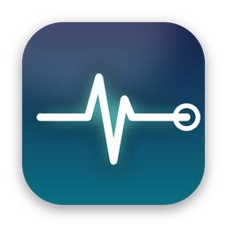
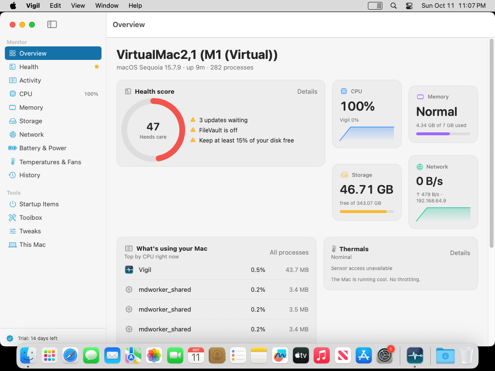

Live monitoring, a health score that tells you what to do, and a history that remembers what slowed you down. In your menu bar.
Download for macOS See pricingmacOS 14 Sonoma or later · Apple Silicon and Intel · 14-day Pro trial, no account

Every process explained in plain English with a safe-to-quit verdict. No more guessing what mds_stores is doing.
Vigil remembers. Drag across any chart and see exactly which apps were running and how hard, days later.
Storage headroom, memory pressure, thermals, battery wear, FileVault, firewall, backups. Each finding comes with the fix.
Caches, logs, Xcode, Docker, old downloads, iOS backups. See exactly what goes; your own files go to the Trash.
Every sensor your Mac exposes, grouped by CPU, GPU, battery and storage, with the thermal state macOS itself uses.
70+ macOS tweaks with one-click reset. Keep awake, keyboard cleaning, flush DNS, free memory, relaunch Finder, and more.
No account. No analytics. No server. History lives in a SQLite file on your Mac that you can delete at any time. The only network request, a public IP lookup, is off until you turn it on. Licences are verified offline.